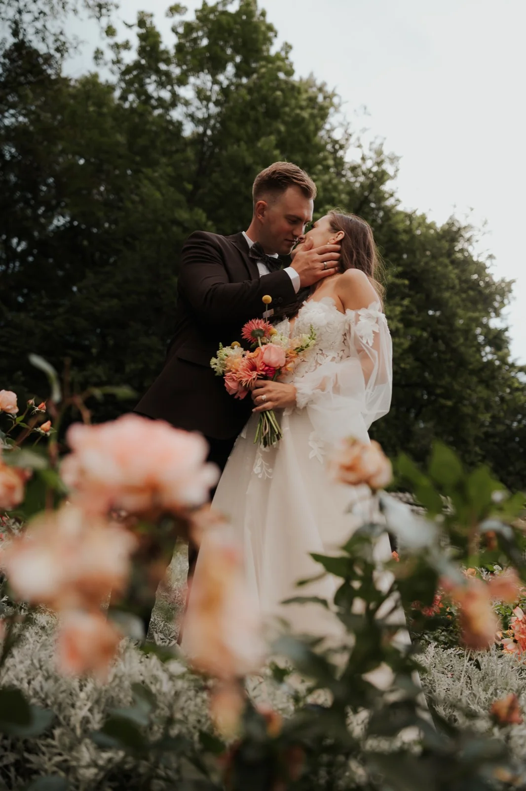
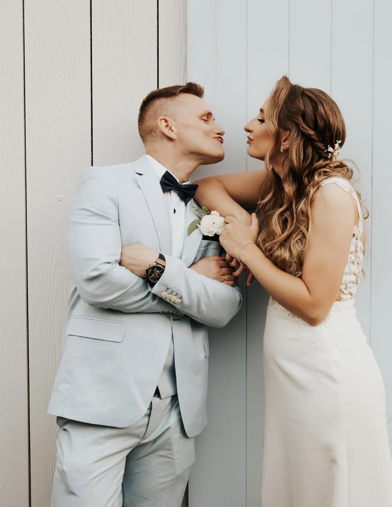
"Krzysiek robił zdjęcia na moim weselu. Mimo, że wpadłam na jego profil przypadkowo to chyba był nam pisany😃 To jak przebiegła nasza współpraca to bajka. Nie należę do osób pewnych siebie przed aparatem a Krzysiek poprowadził nas tak, że wiedzieliśmy co i jak mamy robić. Mimo, że nie widzieliśmy się nigdy wcześniej na żywo od razu złapaliśmy super kontakt. Od gości dostaliśmy mnóstwo komplementów na temat naszego fotografa który był po prostu mega uśmiechniętym gościem całą imprezę. Głowa Krzyśka jest pełna niekończących się pomysłów na foty. Polecam serdecznie!"
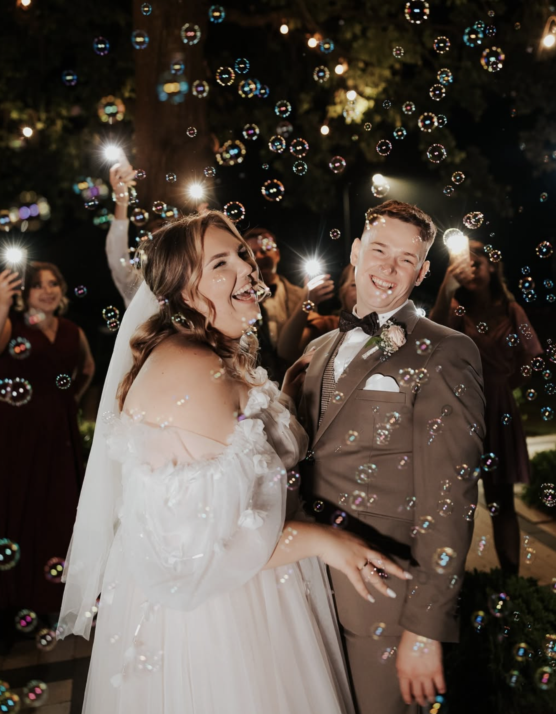
"Z całego serca, razem z żoną, polecamy Krzysia! Jakość jego usług zdecydowanie przerosła nasze oczekiwania. Paczka ze zdjęciami była przepięknie zapakowana - każdy detal dopracowany z niezwykłą starannością. A same fotografie? Absolutne arcydzieła - pełne emocji, światła i magii. Każde ujęcie to wyjątkowa pamiątka na całe życie.
Jesteśmy ogromnie wdzięczni za jego obecność w tym wyjątkowym dla nas dniu. Krzysiek nie tylko uchwycił najważniejsze momenty, ale stworzył atmosferę, w której czuliśmy się swobodnie i naturalnie. Dzięki temu zdjęcia są autentyczne i pełne życia.
To człowiek o niezwykłej aurze - jego obecność sprawia, że wszyscy wokół zaczynają się uśmiechać. Zaraża pozytywną energią i radością, która od razu udziela się innym.
Profesjonalizm, pasja i niesamowita energia - to cechy, które doskonale go opisują. Widać, że kocha to, co robi, a efekty jego pracy są naprawdę wyjątkowe.
Dziękujemy za piękne wspomnienia i z pełnym przekonaniem polecamy Krzysia każdemu, kto szuka nie tylko zdjęć, ale prawdziwych emocji uchwyconych w kadrach."
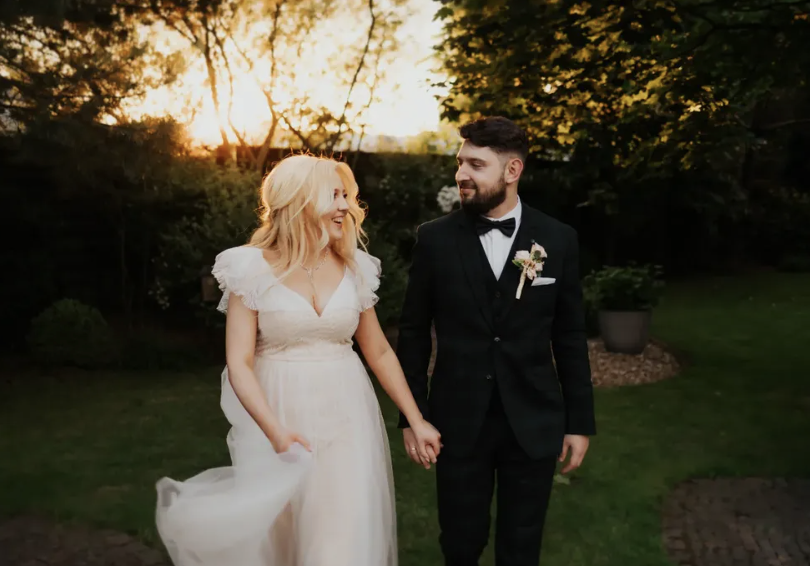
"Krzyś to mistrz w swojej dziedzinie. Jego zdjęcia to magia. Potrafi uchwycić chwile idealne, nawet tak nie fotogenicznych osób jak my. Praca z nim to czysta przyjemność. Będziemy polecać jego wszystkim naszym znajomym i rodzinie. I sami już wiemy że chcemy aby robił zdjęcia na wszystkich naszych wydarzeniach rodzinnych w przyszłości. Dziękujemy bardzo ♥️"
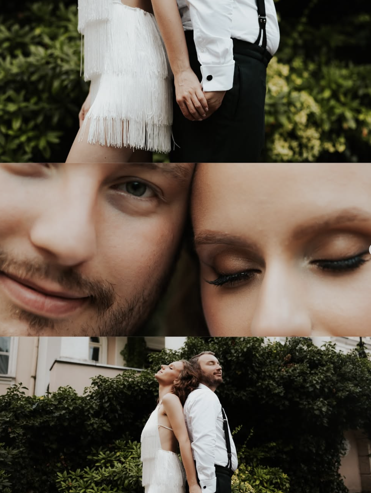
"Jesteśmy zachwyceni współpracą z Krzysiem 🤍 uchwycił cudowne chwilę podczas naszej sesji narzeczeńskiej, dnia ślubu oraz sesji poślubnej i dzięki niemu zostaną one naszym pięknym wspomnieniem. Dziękujemy! Jeśli czytacie tą opinię zastanawiając się czy warto napisać do niego o ofertę i finalnie się na niego zdecydować to nie miejcie wątpliwości! Totalnie warto !!!"
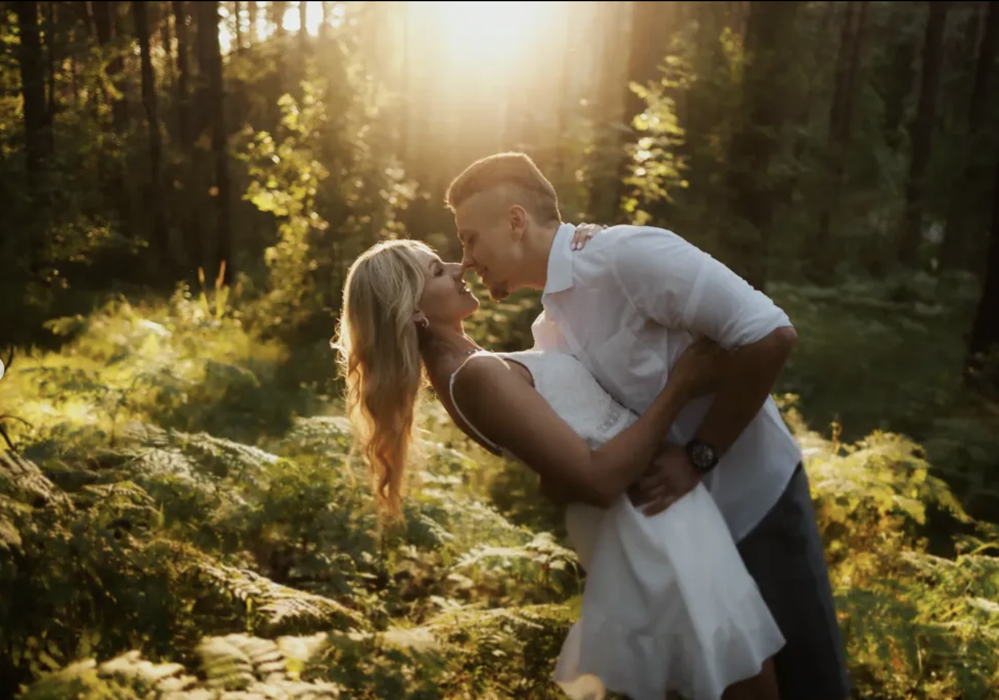
"Polecam z całego serca ! ❤️ Nasza sesja narzeczeńska cudowna !😍😍
Podczas sesji Krzysio dużo pomaga, doradza, panuje super-luźna atmosfera. Zdjęcia przecudowane, zachwyciły nie tylko nas, ale również naszych najbliższych
Bardzo się cieszymy, że trafiliśmy właśnie na Krzysia i że to on bedzie fotografem w naszym najważniejszym dniu ! Nie możemy się doczekać kolejnej współpracy w sierpniu 👰♂️🤵. 📸 Najlepszy fotograf !"
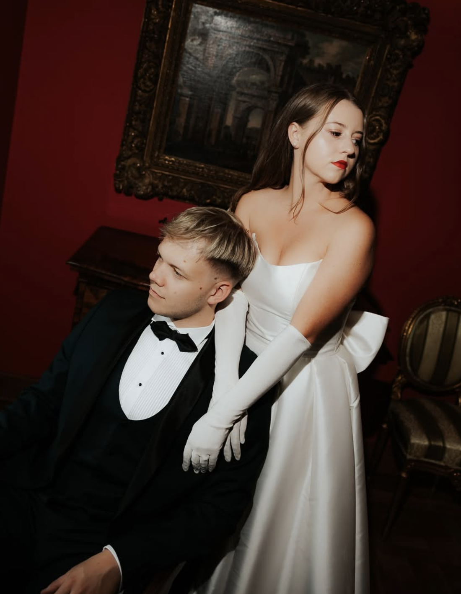
"Zdjęcia, fotografie, uwiecznienie wyjątkowych momentów, to wszystko możesz wyrzucić ze swojej listy zmartwień podczas przeżywania twojego ważnego i emocjonującego dnia. Krzysztof zajmie się wszystkim i sprawi iż oglądając te zdjęcia cofniesz się w czasie do tych chwil i na nowo przeżyjesz tamte wspomnienia tak pięknie uwiecznione w jednej klatce. Oprócz profesjonalizmu technicznego, Pan Fotograf to prze gość, jego aparycja sprawia iż zapominasz o nerwach, rozluźniasz się a pozy same przychodzą ci do głowy oraz sprawiają radość. Serdecznie polecam."
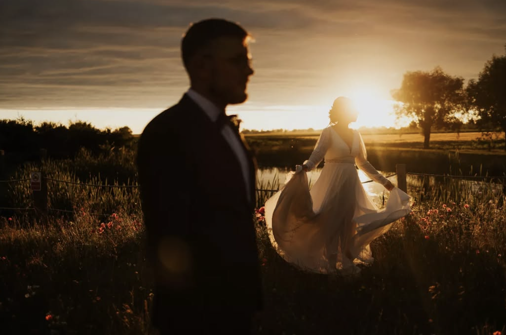
"Nie mamy jeszcze wszystkich zdjęć od Krzyśka, ale już wiem, że lepiej nie mogliśmy wybrać! 🤍
Od samego początku stworzył nam swoją osobą taki klimat, że obydwoje zapomnieliśmy o tym, że nie lubimy być fotografowani. Wszyscy goście, a tym bardziej MY! byliśmy i jesteśmy zachwyceni Krzysiem, jego osobowością i pasją, która bije od niego na każdą stronę. Polecamy z całego serca! ✋🏻"
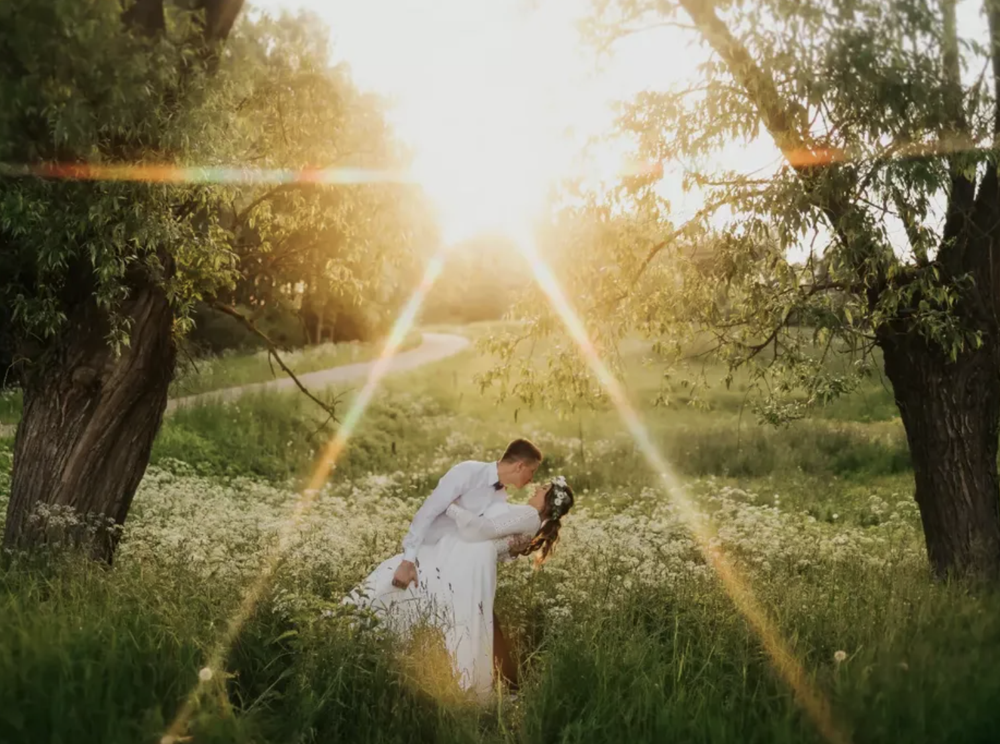
"Do Krzysia wybraliśmy się na sesję narzeczeńską.
Od początku nami kierował, jak mamy się ustawić, gdzie iść. Nie czuliśmy stresu, mimo, że wcześniej nie byliśmy na takiej profesjonalnej sesji.
Całą sesję przegadaliśmy, atmosfera była świetna.
Zdjęcia dostaliśmy po kilku dniach, i oczywiście nie zawiedliśmy się, bo są IDEALNE 🥰 Polecam z całego serca! ❤"
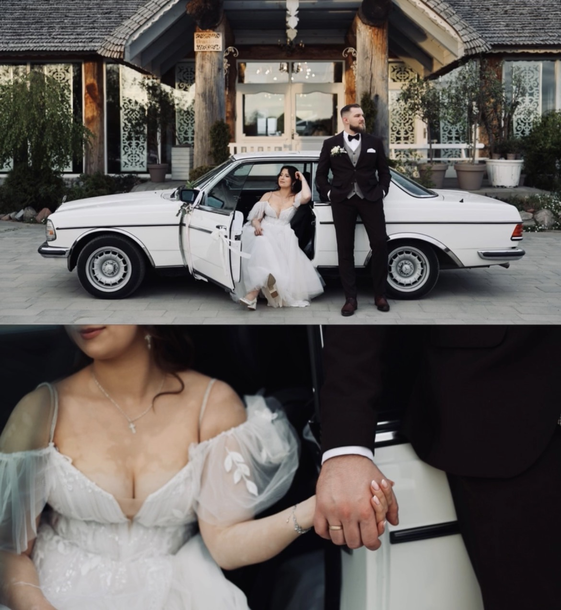
"Krzysiek, fotograf, ojciec, kumpel... tego człowieka nie da się opisać nawet jednym zdaniem. Przede wszystkim jest pełen pasji i ma ogrom doświadczenia. To widać nie tylko podczas jego pracy czy oglądania efektów sesji - to czuć już w trakcie współpracy 🥺❤️
Bardzo polecamy Krzysztofa!
Efekty fotoreportażu z dnia naszego ślubu przebiły oczekiwania o 1000%
Byliśmy przekonani, że nie umiemy pozować i jesteśmy niefotogeniczni, okazało to się mylne. Dostawaliśmy na bieżąco propozycje i porady jak się ustawić lub co zmienić 😇
Zdjęcia, które zrobił Krzyś to nie jest zwykła pamiątka... to kadry w których uchwycone są najmniejsze emocje ❤️"
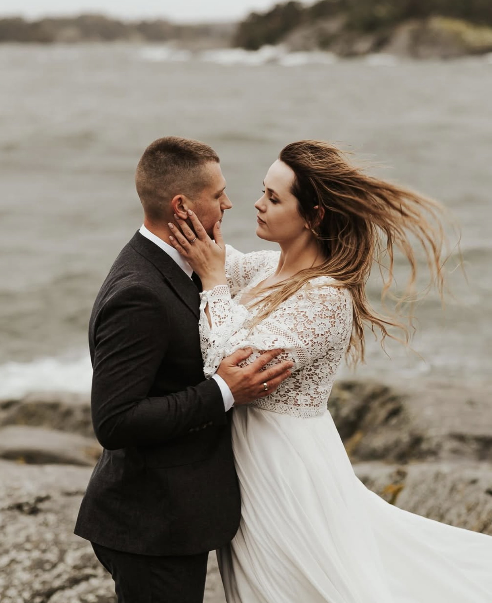
"Jesteśmy totalnie zachwyceni współpracą z Krzysztofem 🤍 Jest on przede wszystkim człowiekiem pełnym pasji i miłości do swojej pracy. Zdjęcia z naszego wesela są idealne i wymarzone. Krzysztof potrafi uchwycić najpiękniejsze emocje, ma wiele kreatywnych pomysłów. Jest osobą bardzo wyluzowaną, ale również bardzo profesjonalną dzięki czemu nie stresowaliśmy się w dniu ślubu. Potrafi rozluźnić atmosferę swoim podejściem i uśmiechem. Ma doskonałe wyczucie chwili. Zdjęcia są bardzo klimatyczne, niebanalne i ciekawe. Na zdjęciach złapane są wszystkie detale. Krzysztofowi nie straszne jest nawet przeprawienie się na druga stronę Bałtyku i fotografowanie w ciężkich warunkach pogodowych, by zrobić piękne zdjęcia na sesji plenerowej wśród szwedzkich fal 😁 🌊Dziękujemy za najwspanialasza pamiątkę na całe życie i możliwość przeniesienia się znowu do naszego wyjątkowego dnia. Z caaaaalego serca bardzo polecamy wszystkim, którzy szukają idealnego fotografa! 💗"